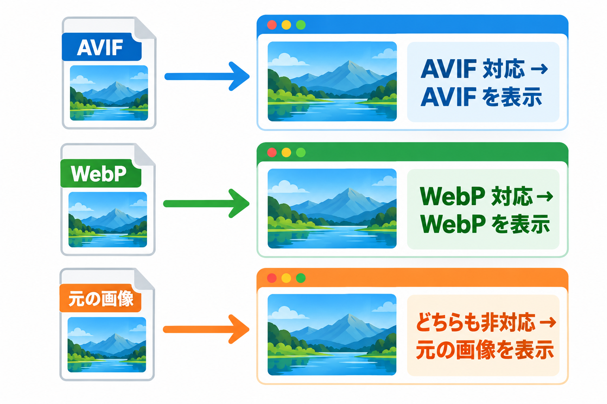

サイトでの表示のしくみ
変換した画像が、サイトでどのように表示されるかを説明します。どの画像が切り替わり、どの画像が元のまま表示されるかがわかります。

切り替えのしくみ
ページの画像を、ブラウザが形式を選べる書き方に置き換えます。ブラウザは AVIF → WebP → 元の画像の順に、自分が表示できる最初のものを選びます。元の画像の URL・代替テキスト・幅と高さはそのまま残し、画像のサイズ違い（レスポンシブ画像）も引き継ぎます。サーバーの設定ファイルを書き換える方法ではないため、サーバーの種類を問わず動きます。
元の画像が WebP のとき
元の画像が WebP のときは、AVIF だけを追加します。
切り替わる画像の条件
次をすべて満たす画像が切り替わります。
- 「設定」タブの「変換した画像を表示する」がオンで、表示できる形式（オンで、配信テストが「問題あり」でない形式）が 1 つ以上ある
- 「切り替える範囲」の対象になっている（設定タブ の「切り替える範囲」）
- このサイトのメディアライブラリ（アップロードフォルダ）の JPEG・PNG・GIF・WebP の画像
- 変換したファイルがあり、元の画像より新しく、空でない
- 「除外する CSS クラス」「除外する画像 URL」に当たらない
切り替わらない画像
| 画像 | 理由 |
|---|---|
| CSS の背景画像 | 表示の切り替えの対象外です |
| 別のサイトや CDN の URL の画像 | このサイトのメディアライブラリの画像ではないため |
| 遅延読み込み（あとから画像を読み込む機能）の印が付いた画像 | 遅延読み込みの機能と競合しないよう、触りません |
| すでに形式を選べる書き方になっている画像 | 二重に置き換えないため |
| インラインの SVG・動画・スクリプトなどの中の画像 | 表示が壊れないよう、触りません |
| 記事本文などの範囲外の画像（「記事本文など」を選んでいるとき） | ヘッダーのロゴなど、テーマが直接出す画像。「ページ全体」にすると対象になります |
| 元の画像を差し替えたあとの古い変換ファイル | 古い変換ファイルは表示に使わず、元の画像を表示します |
表示しない場面
管理画面、フィード、AMP のページ、カスタマイザーのプレビューなど、通常のページ表示以外では切り替えません。
ほかのプラグインとの共存
ほかの画像最適化・WebP 系のプラグインが有効なときは、このプラグインの画面の上部に「他の画像最適化・WebP 系プラグインが有効です：…」と表示されます。
| 場面 | このプラグインの動き |
|---|---|
| すでに形式を選べる書き方になっている画像 | 包み直しません |
| 他のプラグインが作った WebP・AVIF | 上書きも一括削除もしません。元の画像より新しければ、そのまま表示に使います |
| 元の画像を削除したとき | このプラグインが作った変換ファイルだけを削除し、他のプラグインのファイルは残します |
おすすめ
二重の処理は無駄なので、どちらか一方のプラグインの WebP 変換・表示の機能を止めることをおすすめします。なお、この表示はページキャッシュ系などのプラグインが有効なだけでも出ることがあります。
元の画像を差し替えたとき・削除したとき
| 操作 | 起きること |
|---|---|
| 元の画像を同じ名前で差し替えた | 古い変換ファイルは表示に使いません。次の変換で作り直します（ファイルの大きさと更新時刻の両方を変えずに中身だけ変えた場合は見分けられないので、「一括変換」タブの「すべて作り直す」を使ってください） |
| メディアライブラリから画像を完全に削除した | このプラグインが作ったその画像の変換ファイルも削除します |
| プラグインを無効化した | 変換ファイルは残り、サイトは元の画像で表示されます。予約していた変換は止まります |
| プラグインを削除した | 設定と変換の記録を削除します。「プラグイン削除時に変換ファイルも削除」がオンのときだけ、このプラグインが作った WebP・AVIF も削除します |